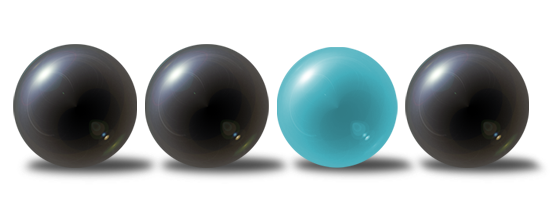
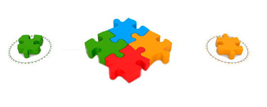
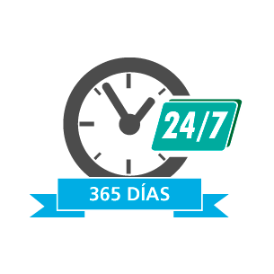

¿Quiénes Somos?
 ¡Capacitaciones multifuncionales! nace el año 2019 para formar y capacitar funcionarios que necesiten adquirir competencias en su área. Nuestra actividad principal gestionar programas de formación que posibiliten el acceso a diversos contenidos. Somos un equipo formado por profesionales del área que sabe la importancia que tienen las nuevas tecnologías de internet en la adquisición de competencias laborales en el mundo de hoy.
OBJETIVOS
OBJETIVOS GENERALES
Se desea implementar una página web, que brindará apoyo a la hora de capacitar al usuario de
distintas empresas con énfasis en el fortalecimiento de sus habilidades en el desempeño de su
labor.
ya que el objetivo es capacitar el personal adecuadamente para la empresa, mejorando
la experiencia de todos los usuarios que utilicen este método acortando el tiempo en el
momento de su capacitación
OBJETIVOS ESPECÍFICOS
 ● Incrementar la productividad en los distintos puestos de trabajo.
● Incrementar la productividad en los distintos puestos de trabajo.
● Promover un ambiente de mayor seguridad en el empleo.
● Lograr que se perfeccionen los ejecutivos y empleados en el desempeño de
sus actividades tanto actuales.
¿Cómo Funciona?
 Nuestro compromiso es crear un espacio donde encontrar capacitaciones las tareas diarias, donde el factor tiempo es vital. Soportando en nuestra página capacitaciones que no dependen de horarios ni desplazas. Usando el método de formación en línea o e-learning a través de nuestra plataforma virtual de aprendizaje.
Clases Todo el Año.
Los usuarios de Capacitaciones Multifuncionales tienen acceso a nuestra aula virtual de aprendizaje y los contenidos 24 horas al día, los 7 días de la semana. Nuestros usuarios podrán realizar las actividades propuestas y acceder a nuestra plataforma virtual en los horarios que disponga.
